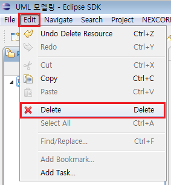
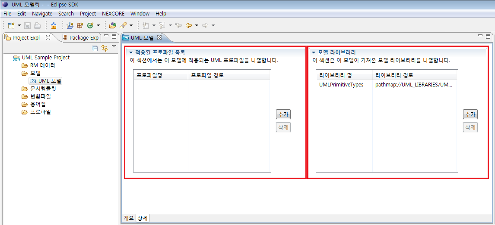
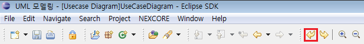
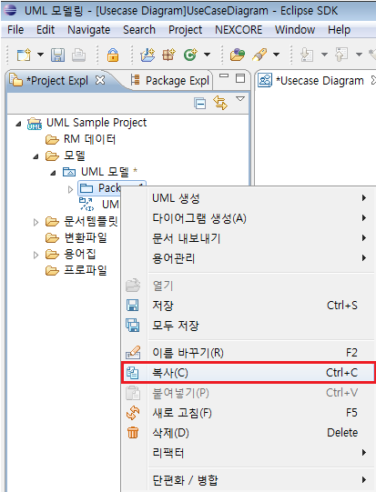
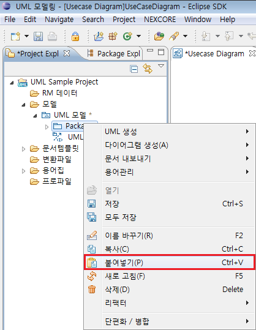
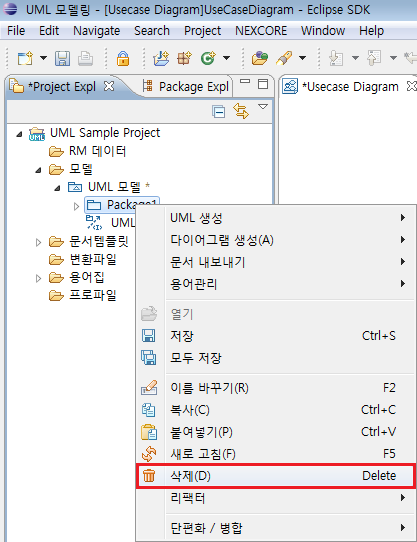
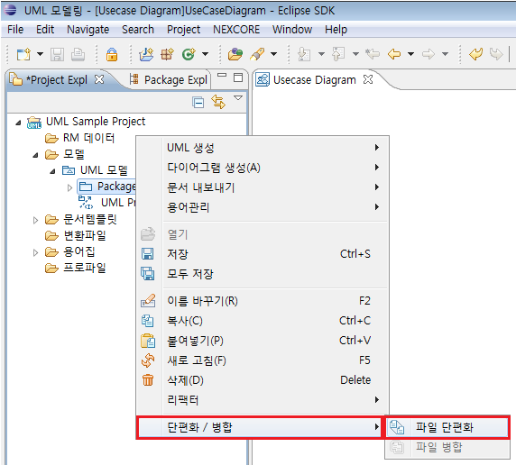

1. 모델 생성
프로젝트에서 설계 정보를 저장할 모델 파일을 생성해야 하며, 프로젝트 탐색기와 다이어그램 편집기에서 관리하는 UML 요소들의 정보가 모델에 저장됩니다.
1.1 모델 생성 #1 (파일 메뉴)
메뉴 바의 파일 메뉴를 선택하고 ‘New’에서 [NEXCORE UML 모델]을 선택합니다.

<그림 1. 파일 메뉴에서의 모델 생성>
마법사 화면에서 모델이 속할 프로젝트 또는 프로젝트 하위의 폴더를 선택한 후, 파일명을 입력합니다. 모델 파일의 확장자는 umx이어야 하고, 입력한 파일명이 기본 모델명이 됩니다.
1.2 모델 생성 #2 (프로젝트 탐색기)
프로젝트 탐색기 창에서 해당 프로젝트 또는 해당 프로젝트 하위의 모델 폴더를 우 클릭한 후,
컨텍스트 메뉴에서 New -> NEXCORE UML 모델을 선택합니다.

<그림 2. 프로젝트 탐색기에서의 모델 생성>
1.3 모델 생성 #3 (Tool bar)
작업 환경의 좌측 상단에 있는 ‘New’
Tool bar 버튼을 클릭해서 New 마법사 창을 연 후,
NEXCORE UML 모델을 선택하거나, ‘New’
Tool bar 버튼의 오른쪽에 있는 화살표를 클릭하여 나오는 메뉴에서 NEXCORE UML
모델을 선택합니다. (이후 흐름은
[모델 생성 #1] 과 동일)

<그림 3. Tool bar에서의 모델 생성>
2. 모델 삭제
2.1 모델 삭제 #1 (편집 메뉴)
프로젝트 탐색기 창에서 해당 모델을 선택한 후,
메뉴 바의 편집 -> 삭제 메뉴를 선택합니다. (단축키:
Art + e -> d 또는 해당 모델을 선택한 후, Enter
키 입력)

<그림 4. 파일 메뉴에서의 모델 삭제>
2.2 모델 삭제 #2 (프로젝트 탐색기)
프로젝트 탐색기 창에서 해당 모델을 우 클릭한 후, 삭제
메뉴를 선택합니다. (이후 기본흐름과 동일)

<그림 5. 프로젝트 탐색기에서의 모델 삭제>
2.3 모델 삭제 #3 (단축키)
프로젝트 탐색기 창에서 해당 모델을 선택한 후, Delete 키를 입력 합니다. (이후 기본흐름과 동일)
3. 모델 편집기
프로젝트 탐색기 창에서 해당 모델을 더블클릭 하거나 해당 모델을 선택한 후 Enter 키를 입력하면 모델 편집기가 열립니다.
3

<그림 6. 모델 편집기의 개요 탭>
3.1.1 일반 정보
해당 모델 파일에 대한 일반 정보를 담고 있습니다.
모델 파일명, 작업 공간 내의 위치,
파일 크기, 마지막 수정 날짜를 표시합니다.
3.1.2 프로젝트 정보
해당 모델 파일에 대한 프로젝트 정보를 관리할 수 있습니다.
프로젝트 명, 프로젝트 코드를 입력할 수 있으며,
이 정보는 모델 파일에 저장됩니다.
3.1.3 문서
해당 모델 파일에 대한 간단한 문서를 작성할 수 있습니다.
이 정보는 모델 파일에 저장됩니다.
3.2 상세 탭

<그림 7. 모델 편집기의 상세 탭>
3.2.1 적용된 프로파일 목록
해당 모델에 적용된 프로파일을 표시합니다. ‘추가’
버튼으로 확장자가 uml 또는 epx인
프로파일을 추가할 수 있으며, 적용된 프로파일을 삭제할 수 있습니다.
3.2.2 모델 라이브러리
해당 모델 파일이 가져온 모델 라이브러리를 표시합니다.
현재, 모델 생성 시에 기본적으로 UML
Primitive Types를 포함하도록 되어 있습니다.
4. 프로젝트 탐색기
4.1 공통 기능
모델 및 하위 모델링 요소에서 공통적으로 사용할 수 있는 기능들입니다.
4.1.1 UML 생성
해당 모델링 요소를 선택한 후, 우 클릭하여
나온 컨텍스트 메뉴의 UML 생성 메뉴를
통해 해당 요소의 하위에 UML 요소를 생성할 수 있습니다.
이 때 표시되는 메뉴 항목들은 해당 요소가 가질 수 있는 UML 요소들이며,
이 요소 중 하나를 선택하면 해당 요소가 생성됩니다.

<그림 8. 프로젝트 탐색기에서의 UML 요소 생성>
4.1.2 다이어그램 생성
해당 모델링 요소를 선택한 후, 우 클릭하여 나온 컨텍스트 메뉴의 다이어그램 생성 메뉴를 통해 해당 요소의 하위에 다이어그램을 생성할 수 있습니다. 하위에 다이어그램이 포함될 수 없는 요소의 경우에는 컨텍스트 메뉴가 표시되지 않습니다.

<그림 9. 프로젝트 탐색기에서의 다이어그램 생성>
4.1.3

<그림 10. 프로젝트 탐색기에서의 새로 고침>
4
모델링 요소를 선택한 후, 메뉴 바의 편집
메뉴에서 Undo를 선택합니다. 프로젝트 탐색기와
다이어그램 편집기를 통틀어 가장 최근에 한 동작이 실행 취소됩니다. Ctrl
+ Z 키로도 동작할 수 있습니다.
프로그램 실행 후, UML 모델과 관련된 동작을 실행하지 않았을 경우에는 비활성화
됩니다.

<그림 11. 실행 취소 (Undo)>
4.1.5 다시 실행 (Redo)
모델링 요소를 선택한 후, 메뉴 바의 편집
메뉴에서 Redo를 선택합니다. 프로젝트 탐색기와
다이어그램 편집기를 통틀어 가장 최근에 실행한 Undo 동작이 다시 실행됩니다.
Ctrl + Y 키로도 동작할 수 있습니다.
프로그램 실행 후, UML 모델과 관련된 실행 취소가 일어나지 않았을 경우에는
비활성화 됩니다.

<그림 12. 다시 실행 (Redo)>
4.2 모델 기능
모델을 선택했을 때에만 사용할 수 있는 기능들입니다.
4.2.1 문서 내보내기
해당 모델을 리스트나 명세서 등의 문서로 내보내는 기능입니다.
패키지 리스트, 클래스 리스트,
유즈케이스 리스트는 엑셀 파일로 내보낼 수 있으며, 클래스 명세서,
유즈케이스 명세서는 워드 파일로 내보낼 수 있습니다. 자세한 설명은
‘보고서’ 절을 참조.

<그림 13. 문서 내보내기 기능>
4.3 UML 요소 공통 기능
모델 하위에 있는 UML 요소들을 선택했을 때 사용할 수 있는 기능들 입니다.
4.3.1 저장
해당 모델링 요소를 선택한 후, 우 클릭하여
나온 컨텍스트 메뉴의 저장 메뉴를 통해,
해당 UML 요소가 포함된 모델을 저장할 수 있습니다.
또는, Ctrl +
S 키를 이용하여 저장할 수도 있습니다.

<그림 14. 저장 기능>
4.3.2 모두 저장
해당 모델링 요소를 선택한 후, 우 클릭하여
나온 컨텍스트 메뉴의 모두 저장 메뉴를 통해,
작업 공간 안에 있는 UML 모델을 모두 저장할 수 있습니다.

<그림 15. 모두 저장 기능>
4.3.3 이름 바꾸기
해당 모델링 요소를 선택한 후, 우 클릭하여
나온 컨텍스트 메뉴의 이름 바꾸기 메뉴를 통해,
해당 UML 요소의 이름을 변경할 수 있습니다.
또는, F2 키를 이용하여 변경할 수도 있습니다.
또한 프로젝트
탐색기에서 모델을 선택한 후, 특성 창에서도 변경할 수 있습니다.

<그림 16. 이름 바꾸기 기능 (Rename)>
4.3.4 복사
해당 모델링 요소를 선택한 후, 우 클릭하여
나온 컨텍스트 메뉴의 복사 메뉴를 통해,
해당 UML 요소를 클립보드에 복사할 수 있습니다.
또는, Ctrl + C
키를 이용하여 복사할 수도 있습니다.

<그림 17. 복사 기능>
4.3.5 붙여 넣기
해당 모델링 요소를 선택한 후, 우 클릭하여
나온 컨텍스트 메뉴의 붙여 넣기 메뉴를 통해,
클립보드에 저장되어 있는 UML 요소를 해당 모델링 요소의 하위에 붙여 넣을 수
있습니다. 단, 이미
‘복사’를 통해 클립보드에 내용이 있을 경우에만
활성화 됩니다. Ctrl +
V 키로도 동작할 수 있습니다.

<그림 18. 붙여 넣기 기능>
4.3.6 삭제
해당 모델링 요소를 선택한 후, 우 클릭하여
나온 컨텍스트 메뉴의 삭제 메뉴를 통해 해당 요소를 모델에서 삭제할 수 있습니다.
Delete 키로도 삭제할 수 있습니다.

<그림 19. 삭제 기능>
4.4 단편화
UML 모델을 작은 단위로 단편화하여 관리할 수
있습니다. 이 때, 단편화의 단위는 패키지입니다.
프로젝트 탐색기에서 패키지 요소를 선택했을 경우에만 단편화를 사용할 수 있습니다.
4.4.1 파일 단편화
패키지 요소를 다른 파일로 단편화하는 기능입니다.
해당 모델링 요소를 선택한 후, 우 클릭하여 나온
컨텍스트 메뉴의 단편화 -> 파일 단편화 메뉴를 선택합니다.

<그림 20. 파일 단편화 기능>
대화 창에서 단편화된 파일을 저장할 위치를 파일 시스템이나 작업 공간 중에서 선택하고,
단편화한 결과가 저장될 파일명을 지정합니다. 이 때,
단편화해서 관리할 파일의 확장자는 umf가 되어야 합니다.

<그림 21. 단편화 정보 입력 창>
파일 단편화가 완료되면, 프로젝트 탐색기에서
패키지 아이콘이 변경되며, 이것을 통해 패키지가 단편화되었음을 확인할 수 있습니다.
이미 파일 단편화가 이루어진 요소에서는 해당 메뉴가 비활성이 되며, 파일 병합 메뉴가
활성화 됩니다.
4.4.2 파일 병합
파일 단편화를 통해서 단편화된 파일을 다시 원
모델에 병합하는 기능입니다. 파일 단편화가 이루어진 요소에서만 해당 메뉴가 활성화됩니다.
단편화된 패키지 요소를 선택한 후, 우 클릭하여 나온
컨텍스트 메뉴의 단편화 -> 파일 병합 메뉴를 선택하면 단편화된 요소가 원
모델로 병합됩니다.
파일 병합이 완료되면, 프로젝트 탐색기에서 패키지 아이콘이 변경되며,
이것을 통해 해당 요소가 병합되었음을 확인할 수 있습니다. 병합이 완료되면 해당
메뉴가 비활성이 되며, 파일 단편화 메뉴가 활성화 됩니다.
파일 병합이 완료되어도 단편화되었던 파일 자체는 파일 시스템에서 사라지지 않는다.
※ 파일 병합 후,
프로젝트 탐색기에서 해당 패키지가 파일로 표시될 경우가 있습니다. 이 때는 새로 고침을 한 번
실행하면 패키지로 표시가 됩니다.

<그림 22. 파일 병합 기능>